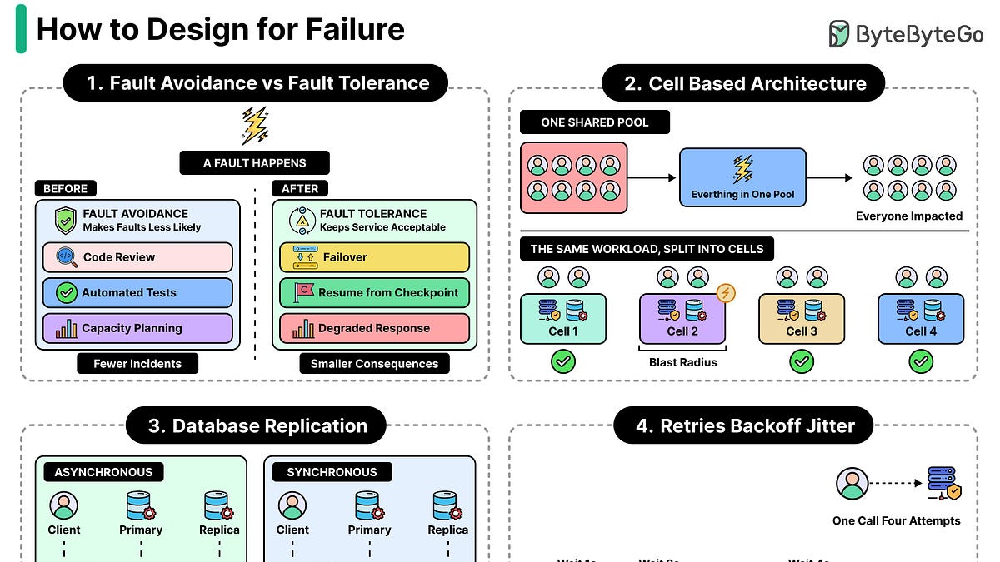
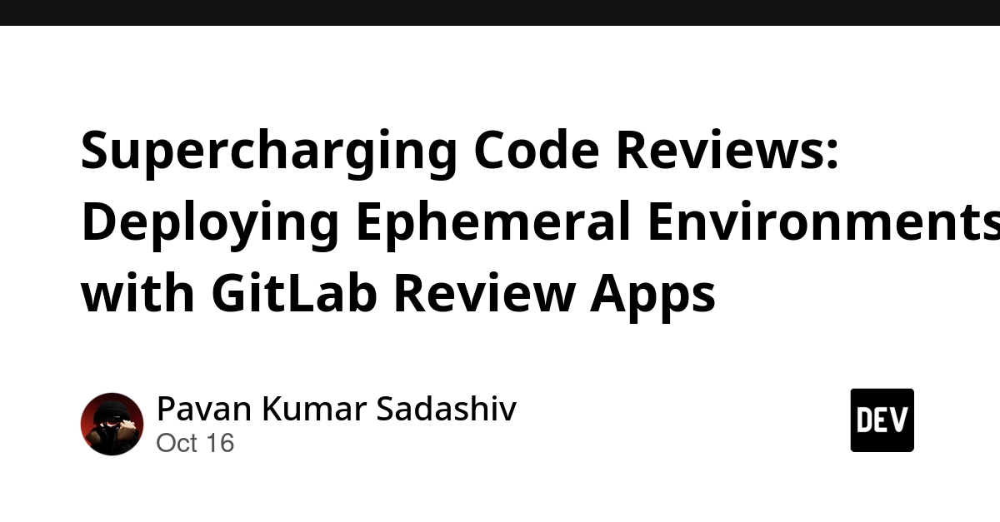
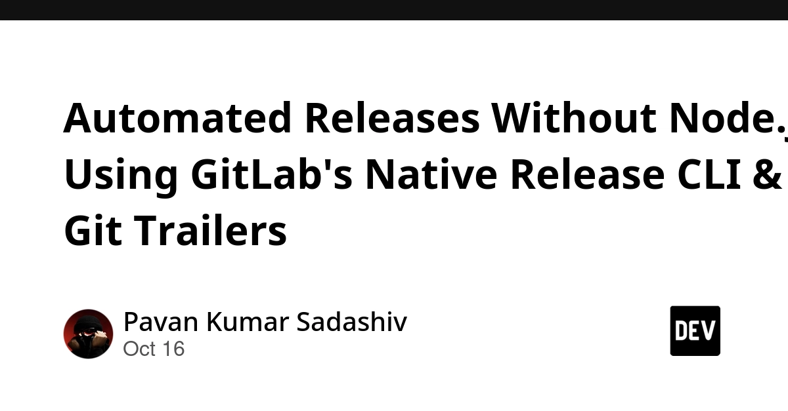
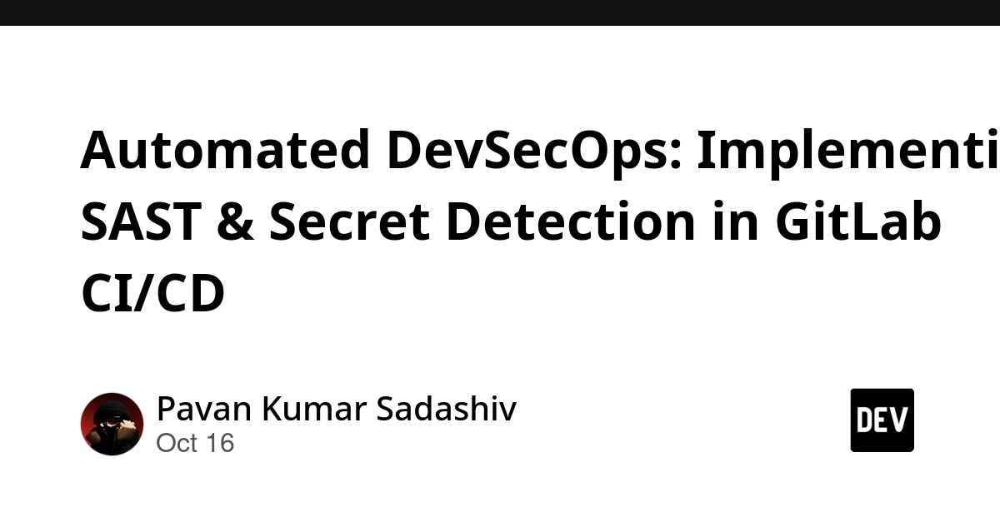
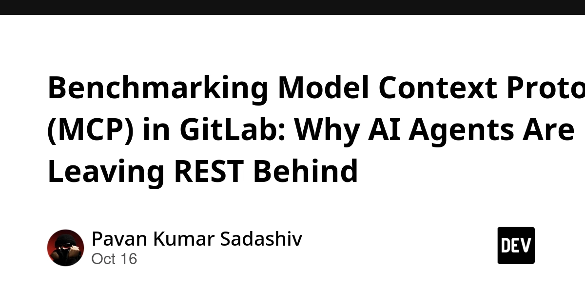
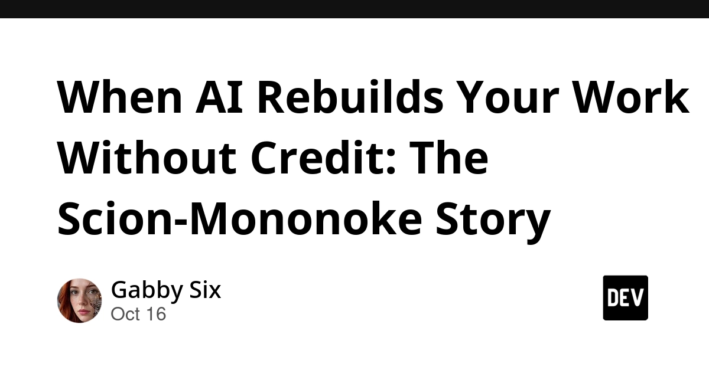
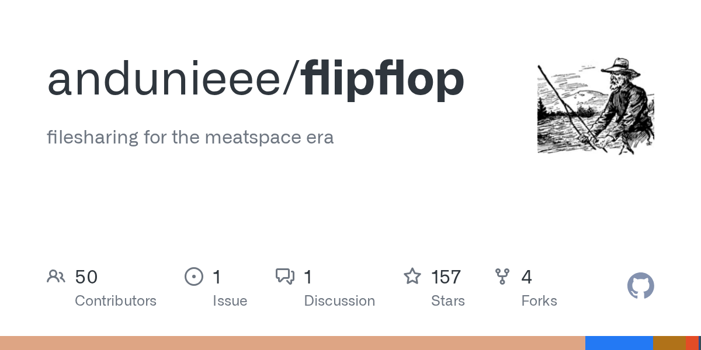

🔥 Top 3 (must read)
The Pulse: new trend of building "internal vibe-coding apps" at tech companies
Ramp and Stripe built in-house platforms that let non-engineers build internal websites and tools with AI. Both platforms are taking off inside those companies, and the author expects more companies to copy this. Why it matters: As an EM, this is a concrete model for how AI adoption can move work off your engineering team. It is worth thinking about what guardrails such a platform needs before someone at your company asks for one.

How to Design for Failures
A walkthrough of the strategies developers use to handle failures in distributed systems. Covers the standard toolbox: timeouts, retries, fallbacks, and isolation of failing parts. Why it matters: Good refresher for system design discussions with your team, and a quick reference to hand to engineers who are new to backend reliability work.

Supercharging Code Reviews: Deploying Ephemeral Environments with GitLab Review Apps
Unit tests pass but the merged frontend is broken. The fix is a short-lived environment per merge request, so reviewers can click through the real UI before merging. Why it matters: This is a direct upgrade to review culture and a natural place to run Playwright or Maestro E2E tests against a live build of each PR.

🛠 Tools & releases
Automated Releases Without Node.js: Using GitLab's Native Release CLI & Git Trailers
Skip
semantic-release and its npm dependency tree. GitLab's built-in release CLI plus git trailers can bump versions and draft changelogs on its own.
Automated DevSecOps: Implementing SAST & Secret Detection in GitLab CI/CD
How to add static analysis and leaked-key detection as pipeline stages so a committed API key is caught before merge.

🤖 AI for developers
Benchmarking Model Context Protocol (MCP) in GitLab: Why AI Agents Are Leaving REST Behind
Compares agents using GitLab's MCP server versus raw REST calls with a personal access token. Useful if you are wiring Claude Code or Copilot into your GitLab workflow.

The next developer interface is ambient intelligence
GitHub's view that agents, voice, and physical controls move developers from "operating tools" to "expressing intent." Vision piece, but it signals where Copilot is heading.
When AI Rebuilds Your Work Without Credit: The Scion-Mononoke Story
Follow-up on Anthropic's AI-built version control system Scion. It turned out to be a rebuild of Meta's Mononoke, and attribution came only after public pushback. A reminder to check what agent-written code borrows from.

👔 Engineering & teams
Staying Evergreen: How we automated secure access and repo hygiene in a shared org
GitHub uses its own native features to review outside collaborator access and archive stale repos automatically. Good pattern for any org with many repos and rotating contractors.
The Pulse: internal vibe-coding apps
See Top 3. The EM question is: who owns and maintains the tools non-engineers build?
🎯 For me
GitLab Review Apps
Review Apps + E2E: The piece is the closest match today. A per-MR environment is the missing piece that makes Playwright runs on PRs meaningful instead of running only against staging.
internal vibe-coding apps
AI adoption as an EM: The trend is the story to bring to your next leadership sync.
MCP vs REST in GitLab
Agent tooling: The benchmark matters if your team is giving coding agents access to merge requests and issues.
Nothing today on Node.js, React, or Flutter releases.
💡 App ideas & indie builds
Unfenced – Land for sale that borders public land
(discussion) — A map of land listings that touch public land like national forests. Solves a very specific buyer question that normal real estate sites cannot answer. Inspiration: take a big public dataset, add one filter nobody else offers, and you have a niche product with 269 upvotes.
Flipflop – Iroh-powered persistent tunnels for filesharing
(discussion) — Share files between devices over a peer-to-peer tunnel that stays up, no central server. The problem is "send this file to my other machine without uploading it to someone's cloud." Inspiration: a small, privacy-first tool built on an existing networking library.

Sygal – Convert PDFs, scans and web pages to Markdown, locally
(discussion) — Turns documents into clean Markdown on your own machine. Solves the "I want to feed this into an LLM but not upload it" problem. Inspiration: local-first versions of cloud tools are a strong pattern for 2026.
Proa – A Rust web framework with fast SSR and multi-target rendering
(discussion) — A web framework that renders to several targets from one codebase. Less an app, more a tool, but shows there is still appetite for new frontend stacks when they solve a real speed problem.
My Terminal Themes Web App
A browser tool for building and previewing terminal color themes. A tiny tool for a tiny problem, and still got traction. Inspiration: developer quality-of-life tools are cheap to build and easy to share.
N
🎓 Try this
Set up a per-merge-request environment using GitLab Review Apps, then point one Playwright smoke test at the generated URL. Even one test against a live build of each PR catches the "tests pass but the page is broken" class of bug.
<!-- Confidence: High that every link and summary above comes only from the supplied item list. Medium on the importance ratings, which are my judgment against the reader profile. -->